User guide¶
Introduction¶
MSH/HCSM is a key member of the Malaria drug management subcommittee, which is involved in the stockstatus monitoring of Malaria commodities both at the National and County levels.
On a monthly basis, the Malaria Control Unit, drug management committee meets to review the stock status ofmalaria commodities in the country, by analyzing data from various sources including:
- Facility and County Level Stock Data from DHIS.
- National Level Stock Status data from the Supply Chain Agencies (KEMSA).
- Pipeline information based on incoming shipments per funding agency.
This data is aggregated and analyzed for the different malaria commodities and a 2 pager report generated that indicates to management, the months stock status and pipeline monitoring of Malaria commodities.
Getting started¶
Purpose of this project is to create a stock status management tool that analyzes data from various sources including:
- Facility and County Level Stock Data from DHIS.
- National Level Stock Status data from the Supply Chain Agencies (KEMSA).
- Pipeline information based on incoming shipments per funding agency.
System requirements¶
Chrome/Chromium browser is recommended for the application. This is because of the javascript used in the application wil be able to load faster.
Note
Login roles to the stock status management tool are also required inorder to access the application and its functionality.
Authentication is the process by which clients send login credentials over the HTTP to a web server. The request is associated with a specific user, while authorization determines if the user has permission to perform the requested operation.
Session Authentication¶
Logging in¶
For the functionality of the system to be accessed, a user has to login to the application. The payload should be similar to the example below:
{
"username": "username",
"password": "password"
}
Note
A successiful login will lead you to using the application.
Here is a screenshot of the application login by a given user:
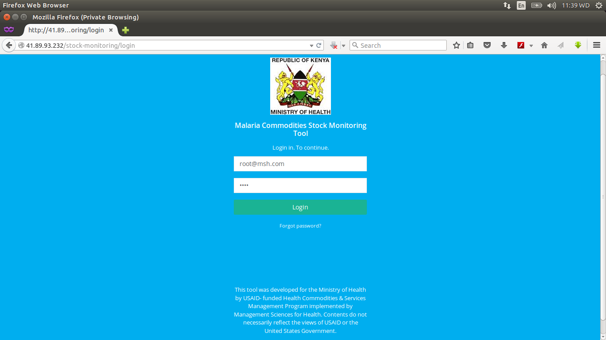
After successiful login, the dashboard is loaded.
Here is the screenshot of application layout as viewed by the admin:

Here is the screenshot of application layout as viewed by the read only user:
Logging out¶
Note
A user can logout after using the tool by clicking the logout button located in the header.
A successful logout will bring up a success message similar to the one below:
{
"success": "Successfully logged out."
}
Permissions¶
Login roles¶
There are various user roles according to the user who is logged in:
Normal Users who can only only read data ie generating and viewing reports. These kind of users have no permissions to change anything in the application.
The Admin who has all the permissions in the application. These include:
- Creation and management of users
- Updating data that is used to generate reports
User management¶
The admin has permissions to manage users.The admin has privillages to add new users and edit the existing ones.
Launching the Application¶
The stock status application is launched as a stand alone application since it is not incorporated in DHIS2. However, the application pulls data from DHIS2.
For the application to be launched, this link has to be typed in the browser. The link redirects the user to the login page.

Application Layout¶
This is the layout of the application:
Header¶
The header of the application has no menu. It has the message: Malaria Commodities Stock Monitoring Tool. It also has the log out icon.
Side bar¶
The side bar of the aplication has an array of links. They include the following:
Manage¶
This link enables the admin to manage the following:
- Funding agencies
- Supply chain agencies
- Commodities
- Counties
- Zones
- Forecasts
Stocks¶
This link allows users to view a report on the malaria stock. It includes:
- Pending shipments
- Current stock
Reports¶
This link is used to query various reports from the application. The reports include:
- Central level MOS
- Forecast data MOS
- Facility level MOS
- National level MOS
- County level NOS
- Stocks
- Commodities
- Agencies
Manage Users¶
Here, the admin can view the list of the users registered in the system. The admin has the permissions of adding new users and updating their details.
Manage¶
Funding Agency¶
This loads the panel for managing the funding agencies. The user clicks a funding agency from the list given for editing or deleting.
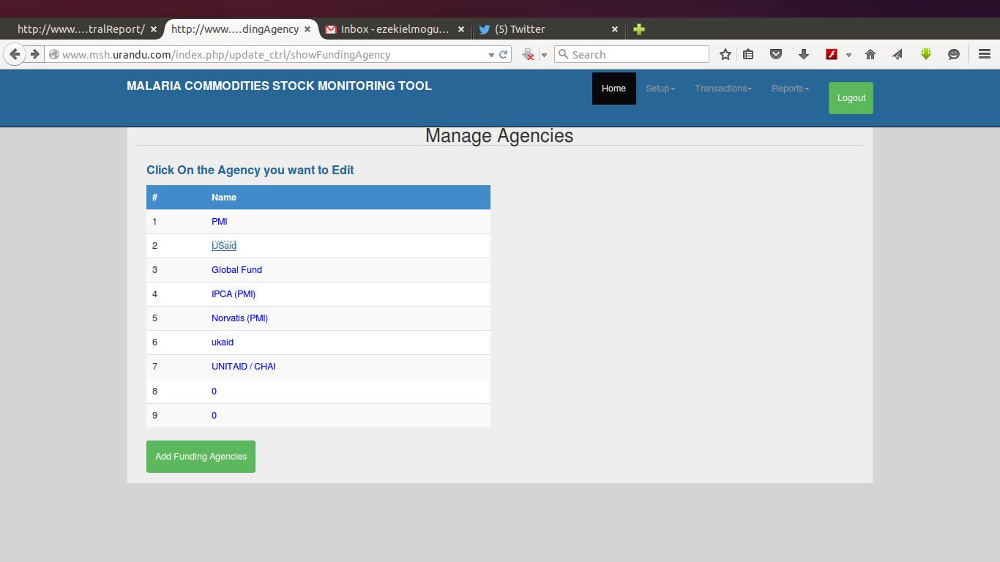
- After choosing one of the agencies, the admin can edit or delete it.
- 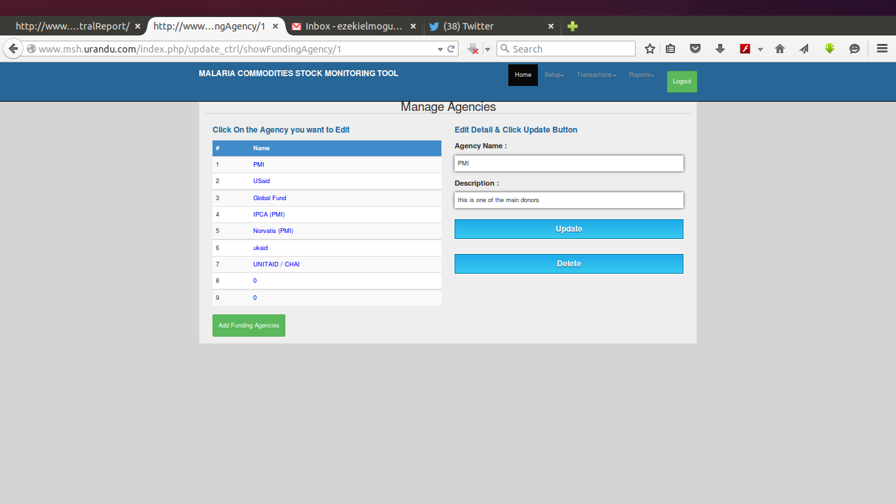
A user can also add a funding by clicking the button of adding an agency.
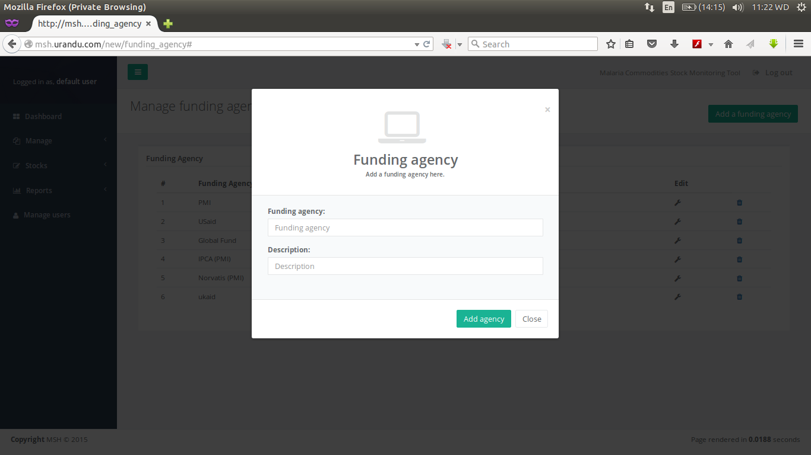
Supply chain agencies¶
This loads the panel for managing the supply chain agencies. The user clicks a supply chain agency from the list given for editing or deleting.
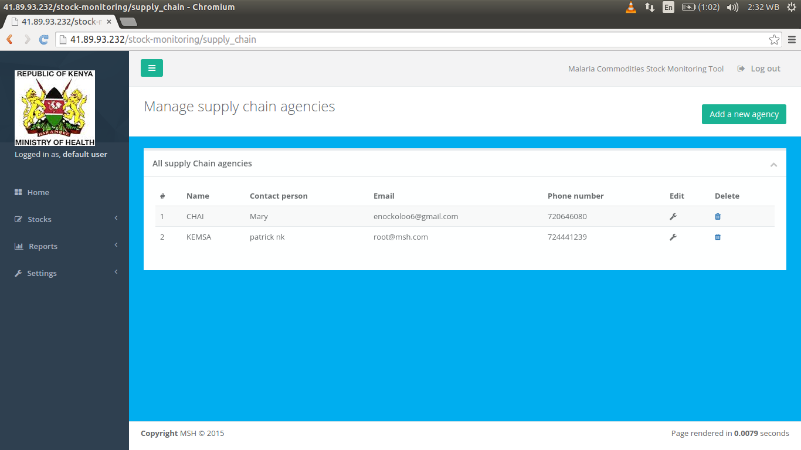
- After choosing one of the supply chain agencies, a user can edit or delete it.
- 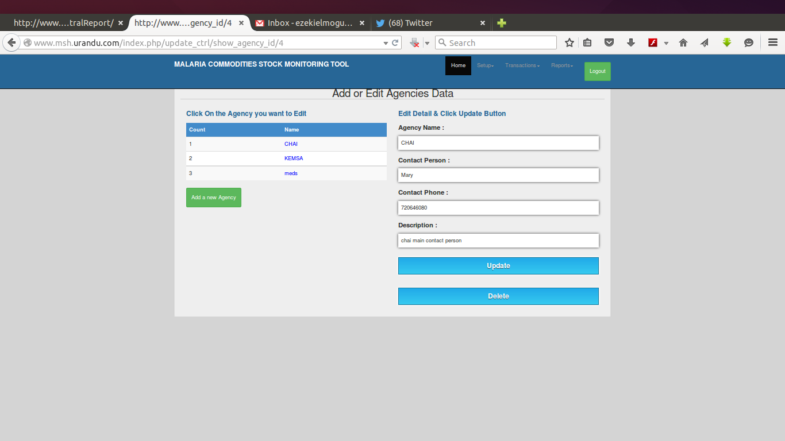
A user can also add a supply chain agency by clicking the button of adding a supply chain agency.
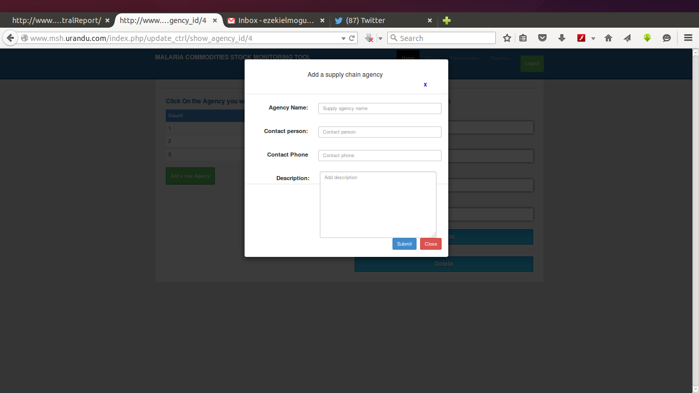
Commodities¶
This loads the panel for managing the individual commodities. The user clicks a commodity from the list given for editing or deleting.
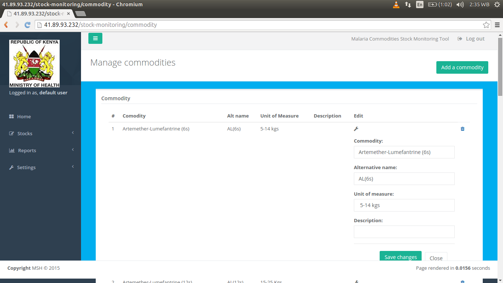
- After choosing one of the commodities, a user can edit or delete it.

A user can also add a commodity by clicking the button of adding a commodity.
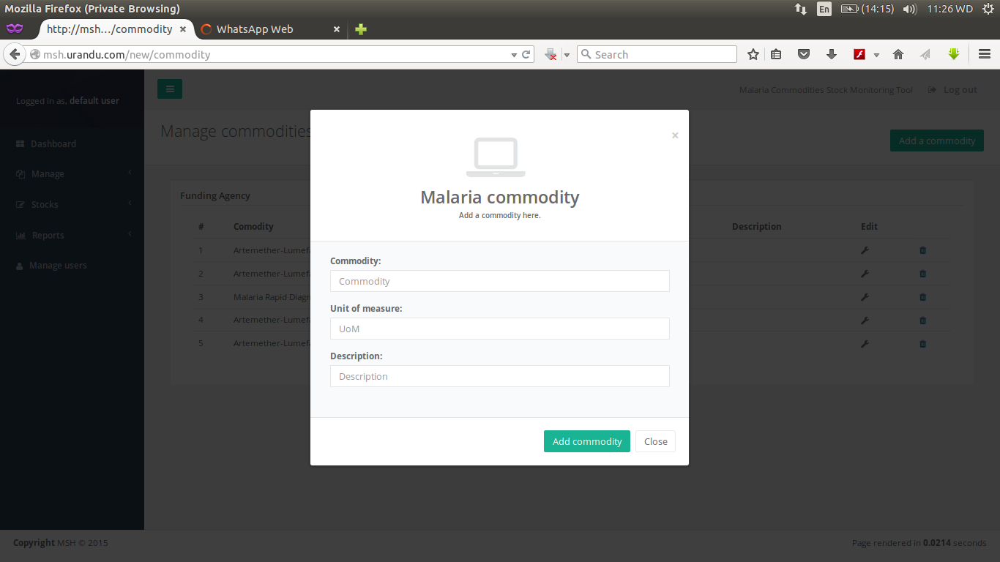
Counties¶
This loads the panel for viewing and updating counties. The user clicks a specific county from the list given for updating details about it.

- After choosing one of the counties, a user can edit the zone and/or the comment about it.

Forecasts¶
This loads the panel for managing the static parameters. The user clicks an item from the list given for editing or deleting.

- After choosing one of the static parameters, a user can edit or delete it.
A user can also add a static parameter by clicking the button of adding a static parameter.
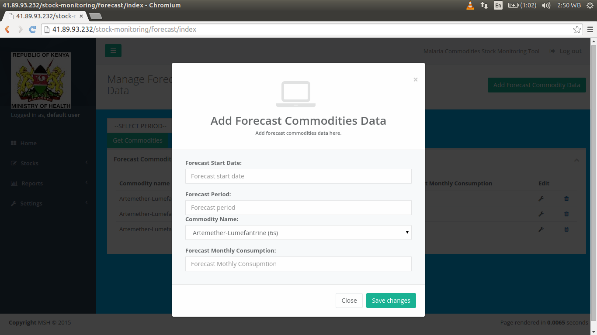
Stocks¶
Pending shipments¶
This loads the panel for managing the pending shipments. The user clicks an item from the pending stock list given for editing or deleting.
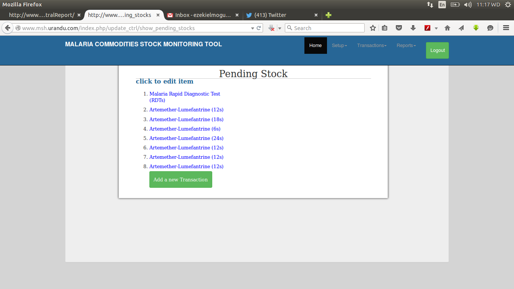
- After choosing one of the pending stock, a user can edit or delete it.
- 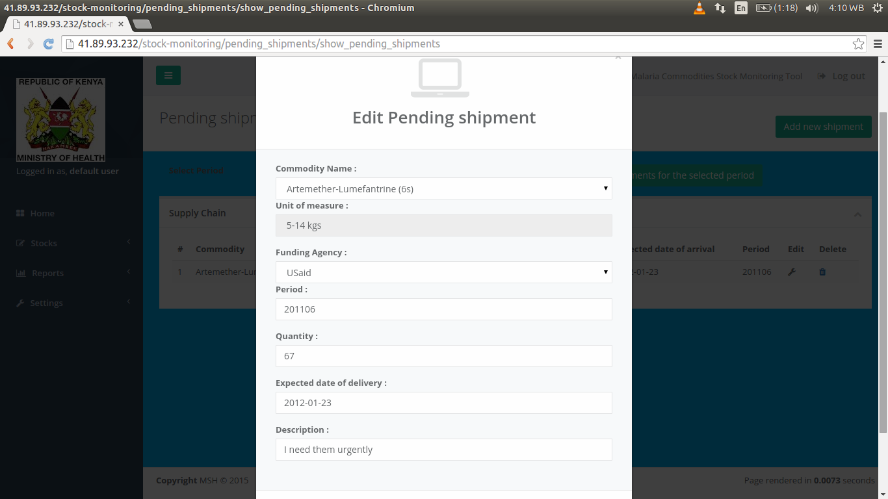
A user can also add a new transaction by clicking the button of adding a new transaction.
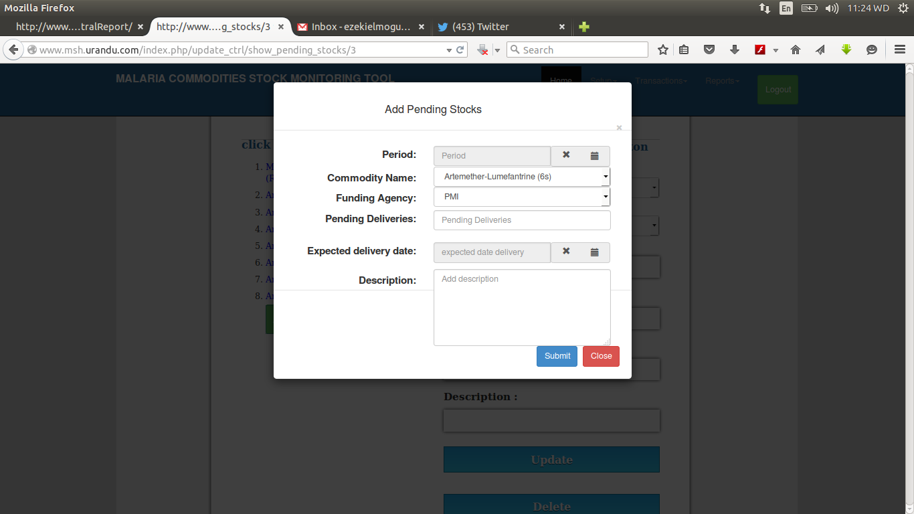
Current Stock¶
This loads the panel for managing the current stock. The user clicks an item from the current stock list given for editing or deleting.
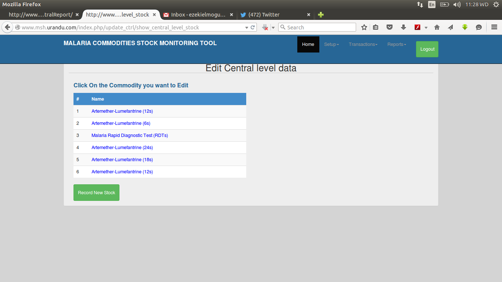
- After choosing one of the current stock commodities, a user can edit or delete it.
- 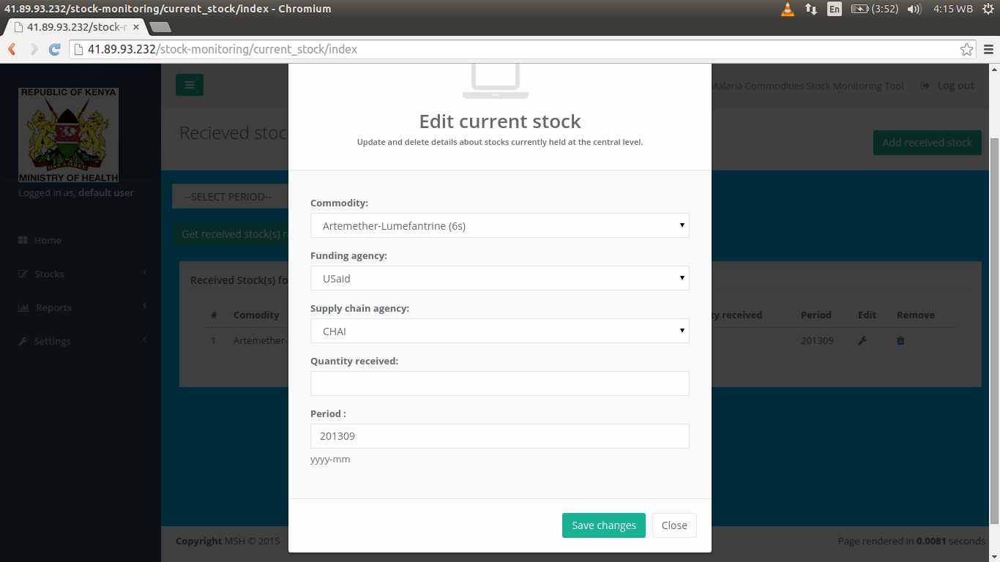
A user can also add a new record by clicking the button of adding a new record.
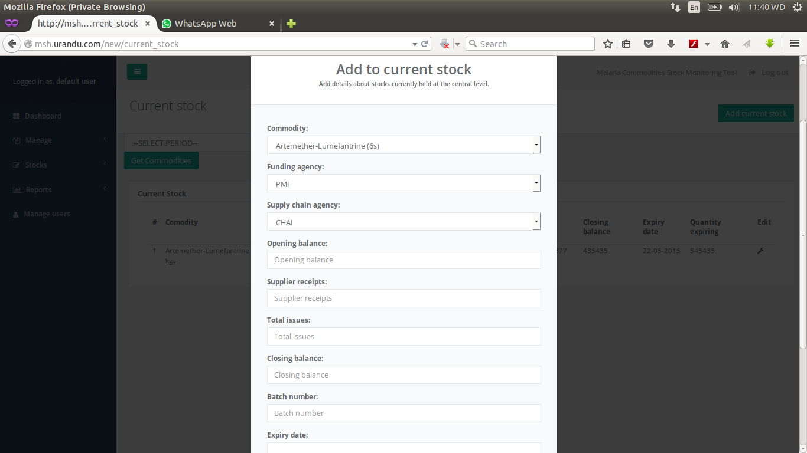
Reports¶
Central level MOS Report(DHIS2)¶
It shows a report on the central level MOS from DHIS2. It reports on the following:
- Commodity name
- Aggregated Adjusted Consumption Totals
- Aggregated Stock on Hand Totals
- Central level MOS

Forecast data MOS¶
A report on central level MOS using forecast data. It reports on the following:
- Commodity name
- Aggregated Adjusted Consumption Totals
- Aggregated Stock on Hand Totals
- Central level MOS

Facility Level MOS¶
A report on facility level MOS. It reports on the following:
- Commodity name
- Adjusted Facility AMC
- Stock on Hand
- Facility Level Month of Stock(MOS)

National Level MOS¶
A report on national level MOS. It reports on the following:
- Commodity name
- Adjusted Facility AMC
- Stock on Hand
- Central Stock on Hand KEMSA
- Pending Shipments
- Facility Stock on Hand
- Central Level MOS
- Pending Shipments MOS
- Facility Level MOS
- National Level MOS

County level MOS Report(DHIS2)¶
It generates a report on the county level MOS. It reports on:
- Commodity name
- Aggregated Adjusted Consumption Totals
- Aggregated Stock on Hand Totals
- County level MOS
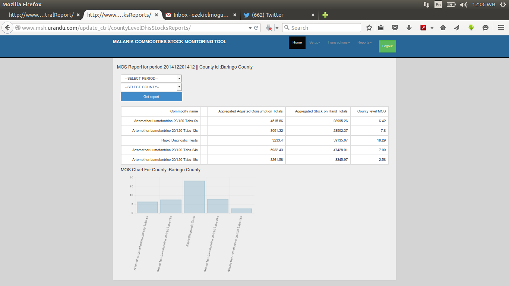
Current/Pending¶
It shows a report on the current/pending commodities. It reports on the following:
- Stock on Hand(SOH)
- Total Pending consignments
- MOS
- Commodity
- Individual Agencies & Quantity
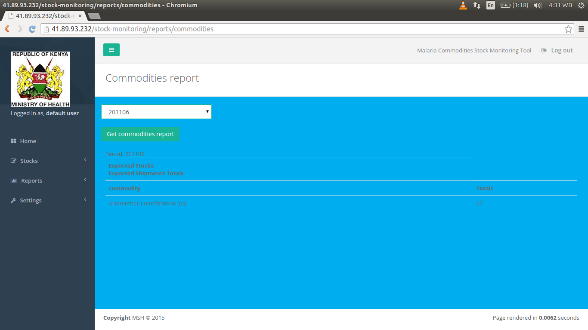
Commodities per agency¶
This shows total pending commoditities per agency. It reports on:
- Commodity
- Agency Totals

Individual pending commodities¶
This shows a report on the individual pending stock. It shows the following details:
- Commodity
- Supporting agency
- Quantity
- E.T.A Details

Total pending shipments per commodities¶
This shows a report on the number of commodities per a given agency.
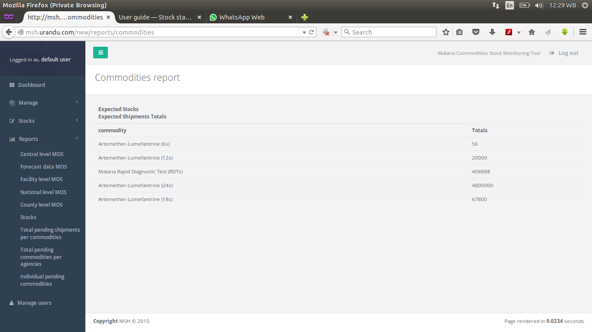